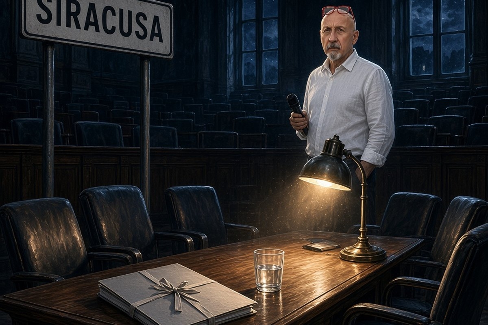

Cronaca · 22 ottobre 2026
Siracusa senza giunta, e dell'azzeramento non risulta l'atto

Gli assessori del Comune hanno firmato le dimissioni uno dopo l'altro, mentre la Procura europea indaga sugli appalti e il sindaco è fra gli indagati. Lui resta al suo posto, e intanto una città da quasi 120 mila abitanti è senza giunta.
di Franco Zanghì
Il 21 ottobre, alle 20:03, dentro Palazzo Vermexio, gli assessori del Comune di Siracusa hanno cominciato a firmare le loro dimissioni, uno dopo l'altro. Quando hanno finito, la città non aveva più una giunta.
Il sindaco, Francesco Italia, lo ha raccontato come un azzeramento, e la differenza fra un azzeramento e una fila di dimissioni non è una sottigliezza da impiegati comunali. Un azzeramento è un atto del sindaco: lo firma lui, lo protocolla e lo pubblica. Le dimissioni le firma ciascun assessore per conto proprio. Nel primo caso decide chi sta in cima; nel secondo, chi sta in cima ne prende atto. E all'Albo pretorio del Comune di Siracusa l'atto di azzeramento non risulta, come non risulta negli altri protocolli consultabili.
Da dove parte la storia: l'ostello di Cassibile
Cassibile è la frazione dove ogni primavera arrivano i braccianti per la raccolta delle patate. L'opera era l'ampliamento di un ostello destinato a loro, ai lavoratori stagionali: più di 1 milione e 600 mila euro, fondi nazionali ed europei, quelli messi a disposizione per contrastare il caporalato e per dare un tetto a chi dorme nei casolari.
Su quell'opera, e su altri affidamenti del Comune, indaga la Procura europea. L'ordinanza è stata firmata il 12 ottobre ed eseguita due giorni dopo: 7 misure cautelari. In carcere è finito un appuntato dei carabinieri. Ai domiciliari è andata Concetta Carbone, che era vicepresidente del consiglio comunale di Siracusa e che da quell'incarico si è dimessa il 19 ottobre. Per altri 4, fra cui alcuni imprenditori, il giudice ha disposto il divieto di esercitare attività d'impresa.
Secondo la ricostruzione del giudice per le indagini preliminari, intorno agli appalti del Comune si era formato un gruppo stabile: gare orientate, affidamenti pilotati, denaro in cambio di favori. A Concetta Carbone i magistrati contestano di aver ricevuto 10 mila euro. Lei lo ha negato, e sostiene che quel denaro fosse un prestito legato alla sua attività.
Il sindaco è indagato e non si dimette
Il sindaco Francesco Italia è indagato, e per lui il giudice non ha disposto nessuna misura. Il 22 ottobre, nell'aula Vittorini, è andato davanti al consiglio comunale e ha detto che non si dimette, e che un'iscrizione nel registro degli indagati non è una condanna. Ha aggiunto di non essere il riferimento di alcun sistema, e ha ricordato che negli atti dell'inchiesta ci sono persone che si lamentavano di non aver ottenuto niente da lui.
Le opposizioni gli hanno risposto chiedendo le sue dimissioni e, non essendo arrivate, hanno annunciato una mozione di sfiducia, che non è stata votata.
Messo in fila quello che è accertato: c'è un'inchiesta della Procura europea su soldi pubblici destinati a chi raccoglie le patate a Cassibile; ci sono 7 misure cautelari eseguite il 14 ottobre, una settimana prima delle dimissioni; c'è un sindaco indagato che resta al suo posto; e c'è una giunta che non esiste più. Per tutte le persone coinvolte, finché non arriva una sentenza definitiva, vale la presunzione d'innocenza: quelle dell'accusa sono accuse, e come tali vanno trattate.
Chi resta, e che cosa si ferma
Nella giunta che si è svuotata è rimasto un assessore solo, e quell'assessore tiene la delega al bilancio e alla legalità. Su una vicenda di appalti è la delega da cui ci si aspetterebbe per prima una vigilanza, ed è l'unica rimasta in sella.
La seconda cosa è più semplice. Siracusa è un capoluogo di provincia con quasi 120 mila abitanti, e per un tempo che nessuno ha stabilito avrà un sindaco indagato e nessun assessore. Le pratiche si fermano, i bandi si fermano, e il conto di questa immobilità non lo paga chi è finito nelle carte: lo paga chi aspetta una risposta da un ufficio comunale.
Resta una domanda, e non è una domanda di sospetto: è che le carte e le parole non dicono la stessa cosa. Un azzeramento è stato annunciato in pubblico; l'atto che lo renderebbe un azzeramento, a oggi, non c'è. Siracusa ha ripreso il controllo della propria amministrazione, o ha soltanto sentito dire che stava accadendo?
Fonti
- La Sicilia, edizione di Siracusa, «Il sindaco Italia non arretra: non mi dimetto per un'iscrizione nel registro degli indagati», 22 ottobre 2026
- La Sicilia, edizione di Siracusa, sulle dimissioni degli assessori e sull'azzeramento non formalizzato all'Albo pretorio, 21 ottobre 2026
- Ansa, lanci sulla giunta di Siracusa, 21 e 22 ottobre 2026
- Il Fatto Quotidiano, sull'inchiesta della Procura europea, le 7 misure cautelari e i reati contestati, 14 ottobre 2026
- LiveSicilia, sulla posizione difensiva di Concetta Carbone e sulle sue dimissioni, 19 ottobre 2026
- Siracusa News, sui dettagli dell'ordinanza, 14 ottobre 2026, e sulle reazioni delle opposizioni in aula, 22 ottobre 2026
- Ministero dell'Interno, pagina del finanziamento per l'ampliamento dell'ostello dei lavoratori stagionali di Cassibile
Alla data di pubblicazione l'azzeramento della giunta risulta annunciato dal sindaco ma non formalizzato da alcun atto pubblicato all'Albo pretorio né reperibile negli altri protocolli consultabili: tecnicamente si tratta di dimissioni dei singoli assessori. Il nome e la delega esatta dell'unico assessore rimasto in carica non sono confermati da due fonti concordanti, e la persona non viene nominata. L'importo del finanziamento non concorda fra le fonti ed è dato come ordine di grandezza. Non risulta pubblicata alcuna decisione del tribunale del Riesame sulle 7 misure cautelari, e la mozione di sfiducia risulta annunciata e non votata.